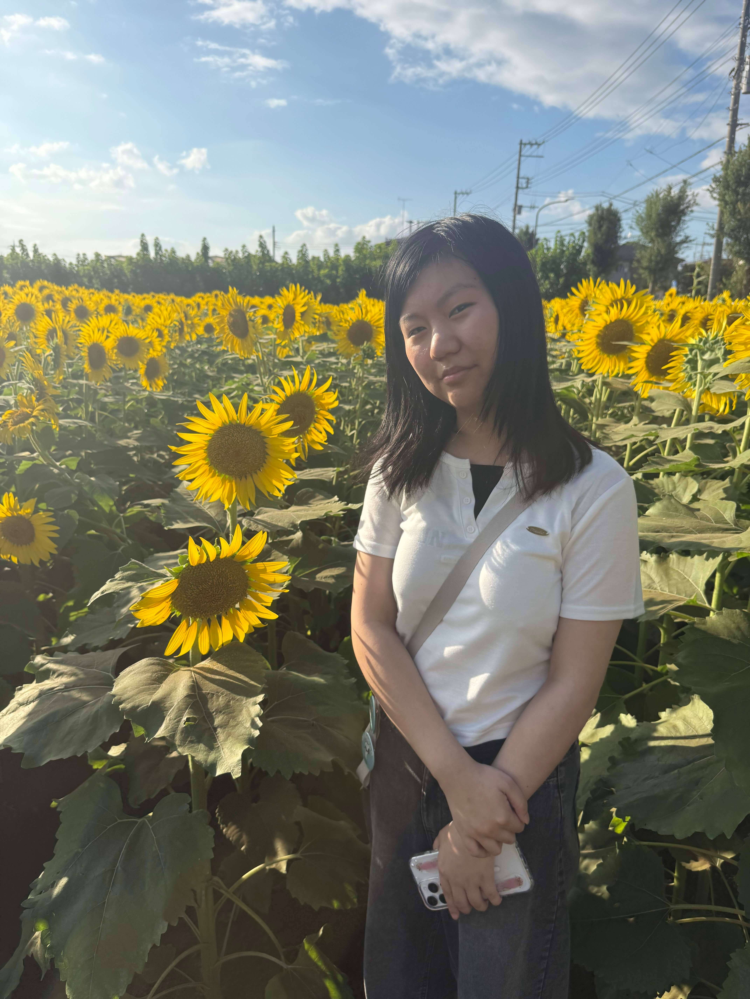

I grew up in San Jose, California while my parents are from Taiwan. And ever since I was a kid, technology has always fascinated me. From watching my dad at his meeting to taking coding classes, computer science always seemed like the path for me especially to my parents. It also helped that I grew up in the Bay Area/Silicon Valley where all the tech companies are located. However, part of me also gets fascinated by art and creating things, like recording videos, editing, and graphic design. For a while I was unsure if computer science was what I truly wanted because it felt way too technical and I did not think it would give me creative freedom. But, as I was learning more about the field of engineering I realized that being creative is a huge element of that field so I decided to pursue it.
I now attend Santa Clara University majoring in Computer Science in the College of Arts and Science. It is less engineering focus but it allows me to explore the field more, while being able to pursue my passion for the arts. As I continue studying and learning what this field entails, I have met other people who are similar in wanting to be technical but also have a love for the arts. The more I learn, the more confident I get in this field being the right path for me.